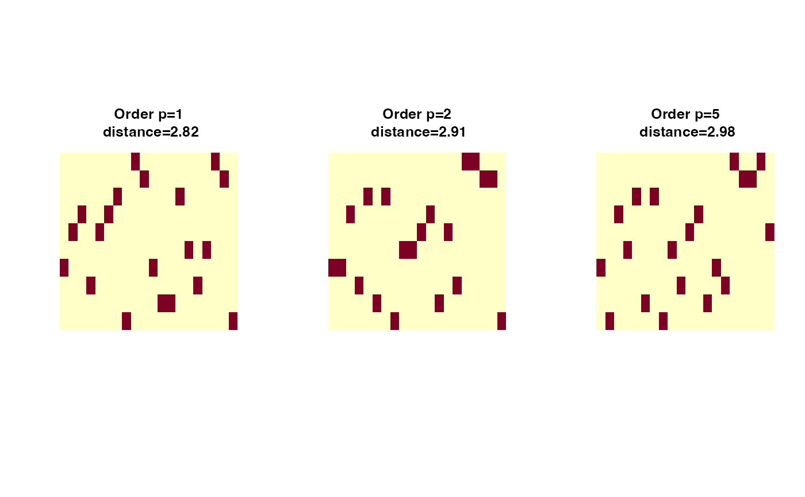

Wasserstein Distance via Linear Programming
wasserstein.RdGiven two empirical measures $$\mu = \sum_{m=1}^M \mu_m \delta_{X_m}\quad\textrm{and}\quad \nu = \sum_{n=1}^N \nu_n \delta_{Y_n},$$ the \(p\)-Wasserstein distance for \(p\geq 1\) is posited as the following optimization problem $$ W_p^p(\mu, \nu) = \min_{\pi \in \Pi(\mu, \nu)} \sum_{m=1}^M \sum_{n=1}^N \pi_{mn} \|X_m - Y_n\|^p, $$ where \(\Pi(\mu, \nu)\) denotes the set of joint distributions (transport plans) with marginals \(\mu\) and \(\nu\). This function solves the above problem with linear programming, which is a standard approach for exact computation of the empirical Wasserstein distance. Please see the section for detailed description on the usage of the function.
Arguments
- X
an \((M\times P)\) matrix of row observations.
- Y
an \((N\times P)\) matrix of row observations.
- p
an exponent for the order of the distance (default: 2).
- wx
a length-\(M\) marginal density that sums to \(1\). If
NULL(default), uniform weight is set.- wy
a length-\(N\) marginal density that sums to \(1\). If
NULL(default), uniform weight is set.- D
an \((M\times N)\) distance matrix \(d(x_m, y_n)\) between two sets of observations.
Value
a named list containing
- distance
\(\mathcal{W}_p\) distance value.
- plan
an \((M\times N)\) nonnegative matrix for the optimal transport plan.
Using wasserstein() function
We assume empirical measures are defined on the Euclidean space \(\mathcal{X}=\mathbb{R}^d\),
$$\mu = \sum_{m=1}^M \mu_m \delta_{X_m}\quad\textrm{and}\quad \nu = \sum_{n=1}^N \nu_n \delta_{Y_n}$$
and the distance metric used here is standard Euclidean norm \(d(x,y) = \|x-y\|\). Here, the
marginals \((\mu_1,\mu_2,\ldots,\mu_M)\) and \((\nu_1,\nu_2,\ldots,\nu_N)\) correspond to
wx and wy, respectively.
Using wassersteinD() function
If other distance measures or underlying spaces are one's interests, we have an option for users to provide
a distance matrix D rather than vectors, where
$$D := D_{M\times N} = d(X_m, Y_n)$$
for arbitrary distance metrics beyond the \(\ell_2\) norm.
References
Peyré G, Cuturi M (2019). “Computational Optimal Transport: With Applications to Data Science.” Foundations and Trends® in Machine Learning, 11(5-6), 355–607. ISSN 1935-8237, 1935-8245, doi:10.1561/2200000073 .
Examples
#-------------------------------------------------------------------
# Wasserstein Distance between Samples from Two Bivariate Normal
#
# * class 1 : samples from Gaussian with mean=(-1, -1)
# * class 2 : samples from Gaussian with mean=(+1, +1)
#-------------------------------------------------------------------
## SMALL EXAMPLE
m = 20
n = 10
X = matrix(rnorm(m*2, mean=-1),ncol=2) # m obs. for X
Y = matrix(rnorm(n*2, mean=+1),ncol=2) # n obs. for Y
## COMPUTE WITH DIFFERENT ORDERS
out1 = wasserstein(X, Y, p=1)
out2 = wasserstein(X, Y, p=2)
out5 = wasserstein(X, Y, p=5)
## VISUALIZE : SHOW THE PLAN AND DISTANCE
pm1 = paste0("Order p=1\n distance=",round(out1$distance,2))
pm2 = paste0("Order p=2\n distance=",round(out2$distance,2))
pm5 = paste0("Order p=5\n distance=",round(out5$distance,2))
opar <- par(no.readonly=TRUE)
par(mfrow=c(1,3), pty="s")
image(out1$plan, axes=FALSE, main=pm1)
image(out2$plan, axes=FALSE, main=pm2)
image(out5$plan, axes=FALSE, main=pm5)

par(opar)
if (FALSE) { # \dontrun{
## COMPARE WITH ANALYTIC RESULTS
# For two Gaussians with same covariance, their
# 2-Wasserstein distance is known so let's compare !
niter = 1000 # number of iterations
vdist = rep(0,niter)
for (i in 1:niter){
mm = sample(30:50, 1)
nn = sample(30:50, 1)
X = matrix(rnorm(mm*2, mean=-1),ncol=2)
Y = matrix(rnorm(nn*2, mean=+1),ncol=2)
vdist[i] = wasserstein(X, Y, p=2)$distance
if (i%%10 == 0){
print(paste0("iteration ",i,"/", niter," complete."))
}
}
# Visualize
opar <- par(no.readonly=TRUE)
hist(vdist, main="Monte Carlo Simulation")
abline(v=sqrt(8), lwd=2, col="red")
par(opar)
} # }